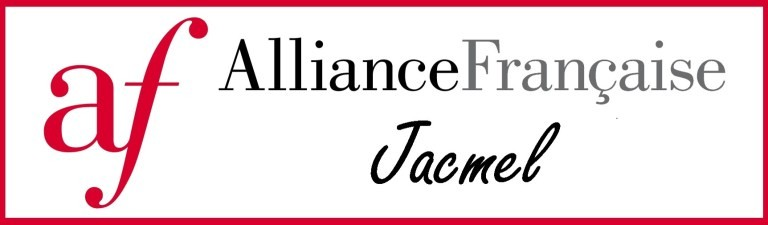
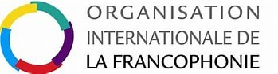

Réviser ses conjugaisons françaises en découvrant l'écocitoyenneté, le patrimoine et la biodiversité d'Haïti.


Un projet environnemental et éducatif porté par l'Alliance Française de Jacmel.
ConjuguonsEco est un jeu éducatif né dans le cadre du projet Sentinelles Alerte Sargasses, porté par l'Alliance Française de Jacmel entre 2021 et 2023.
Ce projet s'inscrit dans le 3e appel à initiatives de l'OIF pour la société civile francophone engagée pour les Objectifs de Développement Durable (ODD). L'Alliance Française de Jacmel fait partie des organisations sélectionnées en 2021 pour leur initiative en faveur des ODD.
L'association Action pour un Développement Durable, les étudiants finissants de l'Université Publique du Sud'Est à Jacmel et quatre communautés scolaires du Sud'Est ont pris part à la mise en œuvre du projet.
Les écoles partenaires : l'école ICOSA de Cyvadier, le Lycée National Jacques Thélusmond de Raymond des Bains, l'école La Dignité de Pétavi et l'école Saint Dominique de Marigot.
Le jeu est né d'un constat de terrain : des lacunes en conjugaison ont été observées chez les apprenants lors des cours de français dispensés par l'AFJ.
L'objectif est double : renforcer les compétences en conjugaison française tout en sensibilisant à la protection de l'environnement et à la biodiversité haïtienne.
Le projet contribue à plusieurs ODD des Nations Unies, notamment l'éducation de qualité (ODD 4), la protection de la vie aquatique (ODD 14) et la vie terrestre (ODD 15).
Une application mobile éducative pour réviser plus de 500 verbes français.
Chaque étape propose un texte à lire sur un thème environnemental haïtien, des verbes à conjuguer au temps demandé, des rappels de grammaire et un dictionnaire de mots cliquables.
Le jeu suit la progression de la méthode Édito (niveaux A1 à B2), utilisée dans l'enseignement du français.
Le jeu intègre des réglages d'accessibilité : taille du texte, police adaptée aux troubles dys, contraste élevé, réduction des animations, lecture audio.
Un système de répétition espacée fait revenir les verbes ratés après 1, 3 puis 7 jours.
Comprendre un phénomène environnemental majeur pour les Antilles.
Depuis 2011, les côtes des Antilles et d'Afrique de l'Ouest connaissent des échouages massifs de sargasses, une algue brune flottante. Ces radeaux d'algues se décomposent sur les plages et libèrent du sulfure d'hydrogène, un gaz irritant pour les yeux et les voies respiratoires.
Les recherches de l'IRD ont montré qu'un événement climatique exceptionnel — une oscillation nord-atlantique de forte intensité en 2009-2010 — a transporté des sargasses hors de leur zone habituelle vers l'Atlantique tropical.
Saint-Jean-du-Sud, Les Cayes, Saint-Louis-du-Sud, Côtes-de-Fer, Jacmel, Cayes-Jacmel et Marigot.
Les personnes qui ont conçu et réalisé ConjuguonsEco.
Au Conseil d'Administration de l'Alliance Française de Jacmel, à l'École Episcopale St Dominique de Marigot, l'école ICOSA de Cyvadier, La Dignité de Pétavy Cayes-Jacmel et le Lycée National Jacques Thélismond de Raymond Cayes-Jacmel.
« Conjuguons Eco » vous invite à réviser vos conjugaisons en français tout en vous faisant découvrir l'écocitoyenneté, le patrimoine et la biodiversité haïtiens.
Derrière le jeu, quelques partis pris techniques et pédagogiques.
ConjuguonsEco est né d'une contrainte simple : les apprenants de l'Alliance Française de Jacmel avaient besoin de réviser la conjugaison, mais les outils existants ne parlaient ni de leur île, ni de leur environnement. J'ai donc construit le jeu autour d'un principe : le français s'apprend mieux quand il parle de ce qu'on connaît.
Trois choix ont guidé le développement. D'abord, l'accessibilité : taille du texte, police adaptée aux troubles dys, contraste élevé, réduction des animations et lecture audio, parce qu'un jeu éducatif doit pouvoir être utilisé par tous les élèves, pas seulement les plus à l'aise. Ensuite, le hors-ligne : les connexions sont irrégulières dans le Sud'Est, et une application qui ne fonctionne qu'avec Internet aurait exclu une partie de son public. Enfin, la répétition espacée : un verbe raté revient après 1, 3 puis 7 jours, parce que la mémorisation se construit dans le temps.
Le jeu reste perfectible — c'est un projet pédagogique, pas un produit fini. Les retours des enseignants et des élèves du Sud'Est ont déjà nourri plusieurs versions, et continueront de le faire.
Ce que les visiteurs, parents et enseignants nous demandent le plus souvent.
Oui, ConjuguonsEco est entièrement gratuit, sans publicité et sans achat intégré. Le jeu a été développé dans le cadre d'un projet soutenu par l'OIF et l'Alliance Française de Jacmel ; il n'a pas de modèle économique.
Non. Le jeu fonctionne sans inscription, sans email et sans collecte de données personnelles. La progression est enregistrée uniquement sur l'appareil de l'utilisateur. Le nom et la photo de profil sont facultatifs et servent seulement aux cartes de partage.
Oui, une fois installé sur l'écran d'accueil (Android/Chrome), le jeu fonctionne hors-ligne. C'est un choix assumé, car les connexions sont irrégulières dans certaines zones du Sud'Est d'Haïti.
Le jeu couvre les niveaux A1 à B2, en suivant la progression de la méthode Édito utilisée dans l'enseignement du français. Quatre parcours sont proposés, de la Citadelle Laferrière au parc national La Visite.
Aux élèves et apprenants de français, aux enseignants qui cherchent un support complémentaire, et à toute personne qui souhaite réviser ses conjugaisons en découvrant la biodiversité et le patrimoine haïtiens.
Oui. Le jeu a été testé avec des communautés scolaires du Sud'Est d'Haïti. Il peut servir de support d'entraînement individuel ou d'activité collective, notamment avec un vidéoprojecteur.
Sur smartphone, tablette et ordinateur, via un navigateur récent. Une version installable (PWA) est proposée sur Android et Chrome pour jouer depuis l'écran d'accueil, même sans connexion.
Via l'Alliance Française de Jacmel (voir les liens en bas de page), ou directement sur le dépôt GitHub du projet. Les retours d'enseignants et d'élèves ont déjà nourri plusieurs versions du jeu.
Pour approfondir le projet et le contexte environnemental.
ConjuguonsEco est disponible gratuitement sur mobile et en ligne.
Accéder au jeu